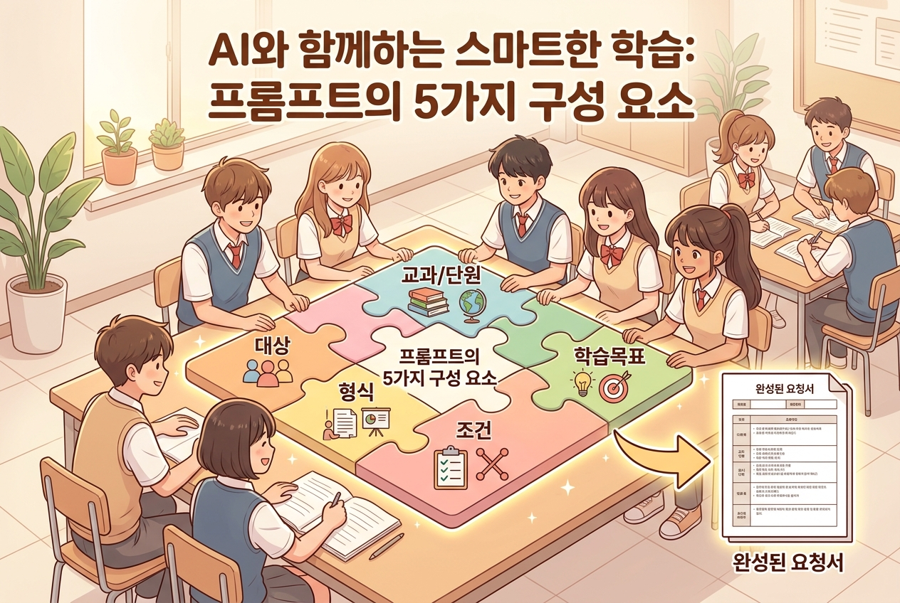

5차시: 구조화하기 — AI가 이해할 수 있는 언어로¶
🎯 이 장에서 배우는 것¶
- 효과적인 프롬프트의 구성 요소를 이해할 수 있다
- 자신의 구상을 체계적인 요청으로 변환할 수 있다
- AI와의 협력에서 명확한 소통의 중요성을 체감할 수 있다
왜 이걸 배우나요?¶
4차시에서 여러분은 "어떤 교육자료를 만들고 싶은지" 구상을 마쳤습니다. 머릿속에 멋진 청사진이 그려져 있을 겁니다. 그런데 이 구상을 AI에게 그대로 전달하면 원하는 결과가 나올까요?
선생님의 머릿속 생각: "2학년 아이들이 흥미를 느낄 수 있는, 실생활 연결된 확률 활동지를 만들고 싶어."
AI가 받는 메시지: "확률 활동지 만들어줘."
이 간극을 메우는 것이 바로 구조화입니다. 오늘은 여러분의 전문적인 구상을 AI가 정확히 이해할 수 있는 형태로 변환하는 방법을 배웁니다. 🎯
⏱️ 수업 흐름¶
| 단계 | 활동 | 시간 |
|---|---|---|
| 1단계 | 핵심 개념: 프롬프트의 5가지 구성 요소 이해 | 10분 |
| 2단계 | 따라하기: 내 구상을 구조화된 요청으로 변환 | 10분 |
| 3단계 | 점검 및 성찰 | 5분 |
📚 핵심 개념¶
개념: 프롬프트 구조화 (Prompt Structuring)¶
1. 비유로 시작 🍳
프롬프트 구조화는 마치 레시피를 작성하는 것과 같습니다.
"맛있는 케이크 만들어줘"라고 하면 어떤 케이크가 나올지 알 수 없습니다. 하지만 "초코 시트 2단, 생크림 데코, 8인치, 생일 축하 문구 포함"이라고 하면? 원하는 케이크에 훨씬 가까운 결과를 얻습니다.
AI에게 교육자료를 요청할 때도 마찬가지입니다. 구체적인 재료(정보)를 빠짐없이 전달해야 원하는 결과물이 나옵니다.
2. 정확한 정의
프롬프트 구조화란, 내가 원하는 교육자료의 조건을 빠짐없이 명시하여 AI에게 전달하는 과정입니다. 에듀플로에서는 이를 입력 항목으로 안내하고 있어, 각 항목을 채워가며 자연스럽게 구조화할 수 있습니다.
3. 예시로 확인 — 프롬프트의 5가지 구성 요소
효과적인 프롬프트에는 다음 5가지가 포함됩니다:

| 구성 요소 | 설명 | 예시 |
|---|---|---|
| 🎒 대상 | 누구를 위한 자료인가 | 고2, 중3, 기초학력 부진 학생 |
| 📖 교과/단원 | 어떤 내용을 다루는가 | 수학-확률과 통계, 과학-세포 분열 |
| 🎯 학습 목표 | 무엇을 할 수 있게 되는가 | "조건부 확률을 실생활에 적용할 수 있다" |
| 📋 형식 | 어떤 모양의 자료인가 | 활동지, 형성평가, 토론 가이드 |
| ⚙️ 조건 | 특별히 지켜야 할 사항 | 난이도, 문항 수, 시간, 포함/제외 내용 |
이 5가지를 "대교목형조"(대상-교과-목표-형식-조건)로 기억해두면 편리합니다.
다음은 같은 요청을 비구조화/구조화로 비교한 예시입니다:
❌ 모호한 요청: "확률 활동지 만들어줘"
✅ 구조화된 요청: - 대상: 고등학교 2학년 - 교과/단원: 수학 – 확률과 통계 – 조건부 확률 - 학습 목표: 조건부 확률의 개념을 이해하고 실생활 문제에 적용할 수 있다 - 형식: 활동지 (A4 1장, 빈칸 채우기 + 서술형 혼합) - 조건: 스포츠 경기 통계를 소재로, 난이도 중, 20분 내 풀 수 있는 분량
이렇게 정리하면 AI는 여러분이 원하는 자료에 훨씬 가까운 결과를 만들어냅니다.
🔨 따라하기 — 내 구상을 구조화하기¶
Step 1: 5가지 요소 채우기 ✍️¶
4차시에서 구상한 교육자료를 떠올리며, 아래 표를 직접 채워보세요. 종이나 메모장에 작성해도 좋습니다.
| 구성 요소 | 나의 교육자료 |
|---|---|
| 🎒 대상 | (예: 고1, 수학 기초반) |
| 📖 교과/단원 | (예: 통합과학 – 생태계와 환경) |
| 🎯 학습 목표 | (예: ~을 설명할 수 있다) |
| 📋 형식 | (예: 모둠 활동지, 5문항 퀴즈) |
| ⚙️ 조건 | (예: 15분 분량, 그림 포함) |
💡 팁: 학습 목표는 "~할 수 있다"로 끝나게 쓰면 명확해집니다. 또한, 조건에는 "포함해야 할 것"뿐 아니라 "빼야 할 것"도 적어보세요. (예: 증명 과정 제외, 계산기 사용 불가 상황)
Step 2: 에듀플로 입력 화면과 연결하기 🖥️¶
작성한 5가지 요소를 에듀플로의 입력 항목에 대응시켜 봅시다.
에듀플로의 입력 항목은 바로 이 5가지 구성 요소를 자연스럽게 안내하는 구조입니다. Step 1에서 정리한 내용을 그대로 옮겨 넣으면 됩니다.
이 과정이 바로 교사의 전문성입니다. AI는 도구일 뿐, "어떤 대상에게, 무엇을, 어떻게 가르칠 것인가"를 결정하는 것은 오직 선생님만 할 수 있습니다. 🌟
⚠️ 주의할 점¶
-
"알아서 잘 해줘"는 금물! 조건이 모호하면 AI는 가장 일반적인 결과를 내놓습니다. 구체적일수록 여러분의 교실 상황에 맞는 자료가 나옵니다.
-
한 번에 완벽할 필요 없습니다. 첫 결과가 70점이면 충분합니다. 조건을 수정해서 다시 요청하면 됩니다. (이것은 6차시에서 다룹니다!)
✅ 점검하기¶
1. 효과적인 프롬프트의 5가지 구성 요소를 모두 말할 수 있나요?
정답 확인
대상, 교과/단원, 학습 목표, 형식, 조건 — 5가지입니다. "대교목형조"로 기억하세요!2. "국어 수행평가 자료 만들어줘"라는 요청에서 빠진 구성 요소는 무엇인가요?
정답 확인
대상(학년), 구체적 단원, 학습 목표, 세부 형식, 조건(난이도·분량 등)이 모두 빠져 있습니다. 5가지 요소 중 교과만 부분적으로 포함된 상태입니다.3. 구조화 과정에서 교사의 전문성이 발휘되는 이유는?
정답 확인
학생의 수준, 교육과정의 맥락, 수업 상황에 맞는 판단은 AI가 아닌 교사만 할 수 있기 때문입니다. 구조화 자체가 교수설계 역량입니다.📝 인터랙티브 퀴즈¶
1. 다음 중 효과적인 프롬프트의 구성 요소에 해당하지 않는 것은?
2. 다음 요청을 더 효과적으로 만들려면 어떤 정보를 추가해야 할까요? — "고2 학생용 생태계 활동지를 만들어줘"
3. 프롬프트 구조화 과정에서 교사의 전문성이 가장 핵심적으로 드러나는 부분은?
✏️ 서술형 문제¶
Step 1에서 작성한 나의 구조화 표를 다시 살펴보세요. 5가지 요소 중 가장 작성하기 어려웠던 항목은 무엇이었고, 그 이유는 무엇인가요?
이 질문에 정답은 없습니다. 자신의 경험을 솔직하게 돌아보는 것이 중요합니다. 많은 선생님들이 '학습 목표를 구체적으로 쓰기'와 '조건을 빠짐없이 떠올리기'를 어려워하시는데, 이는 연습할수록 자연스러워집니다. 😊
🔗 다음 장 미리보기¶
6차시: 생성하고 다듬기 — 첫 결과물, 그리고 피드백
오늘 구조화한 요청을 에듀플로에 실제로 입력하고, AI가 만들어낸 첫 결과물을 확인합니다. 그리고 "이 부분은 이렇게 바꿔줘"라고 피드백하며 자료를 다듬는 과정을 경험합니다. 한 번에 완벽한 결과가 아니라, 대화를 통해 점점 좋아지는 과정이 핵심입니다! 🔄